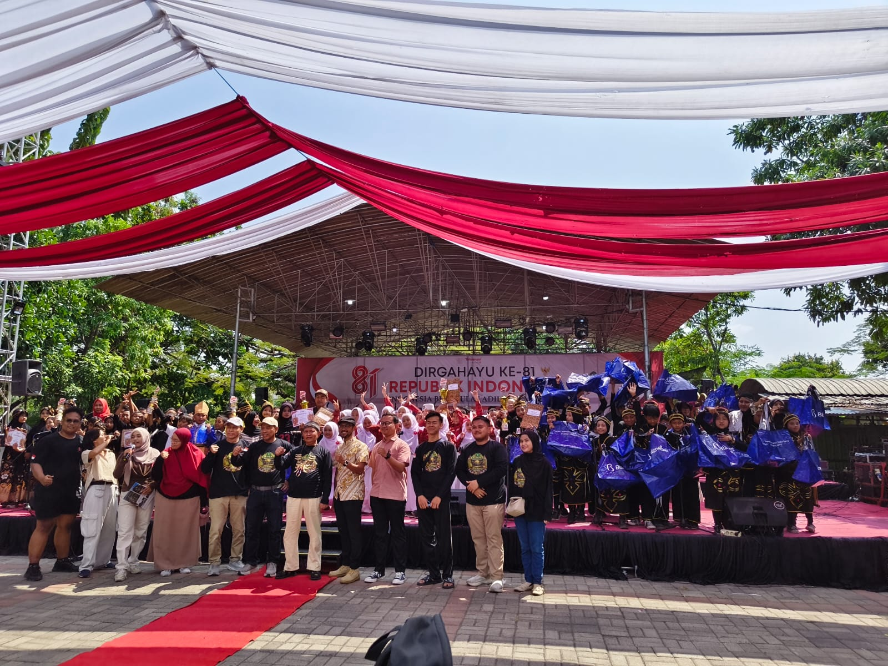
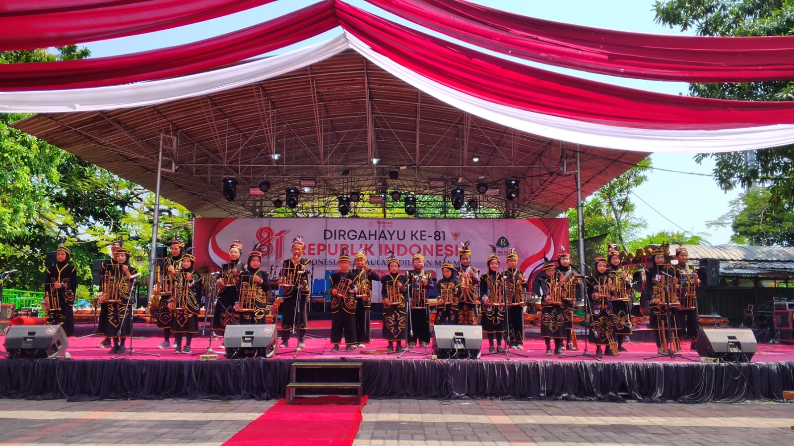

Harmoni Angklung, Semangat Juang, dan Prestasi Membanggakan
Dengan penuh semangat, percaya diri, dan kekompakan, para peserta dari SDN Kebonagung 1 membawa nama baik sekolah dalam sebuah kompetisi seni yang tidak hanya menguji kemampuan bermusik, tetapi juga melatih kedisiplinan, kerja sama, konsentrasi, serta keberanian untuk tampil di hadapan banyak orang.
Angklung bukan sekadar alat musik tradisional. Di balik setiap bunyi yang dihasilkan, terdapat pesan tentang kebersamaan. Setiap pemain memiliki peran masing-masing dan harus mampu menjaga irama agar tercipta sebuah harmoni yang indah. Semangat inilah yang ditunjukkan oleh para siswa SDN Kebonagung 1 sepanjang perlombaan.
Sejak persiapan hingga penampilan di atas panggung, para peserta berlatih dengan sungguh-sungguh. Mereka belajar mendengarkan satu sama lain, mengikuti aba-aba, menjaga tempo, dan memberikan penampilan terbaik. Tidak selalu mudah, namun setiap tantangan justru menjadi motivasi untuk terus belajar dan berkembang.
JUARA 1
Lomba Angklung Tingkat SD
JUARA 4
Lomba Angklung Tingkat SD
Perjuangan tersebut akhirnya membuahkan hasil yang sangat membanggakan. SDN Kebonagung 1 berhasil meraih Juara 1 dan Juara 4 dalam Lomba Angklung Tingkat SD se-Surabaya dan Sidoarjo. Prestasi ini menjadi bukti bahwa kerja keras, latihan yang konsisten, kekompakan, dan keberanian untuk tampil mampu menghasilkan pencapaian yang luar biasa.


Prestasi ini tentunya tidak diraih secara instan. Ada proses panjang yang menjadi bagian penting dari perjalanan para peserta. Setiap latihan, setiap kesalahan yang diperbaiki, setiap nada yang dipelajari, hingga rasa lelah yang berhasil dilewati menjadi pengalaman berharga. Dari proses tersebut tumbuh sebuah keyakinan bahwa keberhasilan akan datang kepada mereka yang mau berusaha dan tidak mudah menyerah.
Lebih dari sekadar mendapatkan piala, keikutsertaan dalam lomba ini menjadi pengalaman pendidikan yang sangat berarti bagi peserta didik. Mereka belajar bahwa sebuah kelompok akan menjadi kuat ketika setiap anggotanya saling mendukung. Seperti halnya angklung, satu suara saja mungkin terdengar sederhana, tetapi ketika dimainkan bersama dengan irama dan kekompakan yang tepat, akan tercipta sebuah harmoni yang indah dan penuh makna.
Keberhasilan ini juga menjadi motivasi bagi seluruh keluarga besar SDN Kebonagung 1 untuk terus mengembangkan potensi peserta didik, khususnya dalam bidang seni dan budaya. Semoga prestasi ini menjadi langkah awal untuk meraih lebih banyak pencapaian pada kesempatan berikutnya.
🎶 Semangat Sang Juara 🎶
"Satu angklung mungkin hanya menghasilkan satu nada, tetapi ketika dimainkan bersama dengan hati dan kekompakan, terciptalah harmoni yang luar biasa."
Selamat kepada seluruh peserta lomba angklung SDN Kebonagung 1 Sukodono atas prestasi yang telah diraih. Teruslah berlatih, teruslah berkarya, dan jangan pernah takut untuk bermimpi menjadi yang terbaik. Jadikan setiap perlombaan sebagai tempat untuk belajar, setiap tantangan sebagai kesempatan untuk tumbuh, dan setiap prestasi sebagai motivasi untuk melangkah lebih jauh.
🎋 SDN Kebonagung 1 — Berkarya dengan Harmoni, Berprestasi dengan Semangat! 🎋